Publications
2016
Subramanian VV, MacQueen AJ, Vader G, Shinohara M, Sanchez A, Borde V, Shinohara A, Hochwagen A. (2016) Chromosome Synapsis Alleviates Mek1-Dependent Suppression of Meiotic DNA Repair. PLoS Biol, 14(2):e1002369 PubMed PDF
Wang D, Mansisidor A, Prabhakar G, Hochwagen A. (2016) Condensin and Hmo1 Mediate a Starvation-Induced Transcriptional Position Effect within the Ribosomal DNA Array. Cell Rep, 14:1010-1017 PubMed PDF
He H, Zhang S, Wang D, Hochwagen A, Li F. (2016) Condensin Promotes Position Effects within Tandem DNA Repeats via the RITS Complex. Cell Rep, 14:1018-1024 PubMed PDF
2015
Vincenten N, Kuhl LM, Lam I, Oke A, Kerr AR, Hochwagen A, Fung J, Keeney S, Vader G, Marston AL. (2015) The kinetochore prevents centromere-proximal crossover recombination during meiosis. eLife 2015;4:e10850 PubMed PDF
Gothwal SK, Patel NJ, Colletti MM, Sasanuma H, Shinohara M, Hochwagen A, Shinohara A. (2015) The Double-Strand Break Landscape of Meiotic Chromosomes Is Shaped by the Paf1 Transcription Elongation Complex in Saccharomyces cerevisiae. Genetics, 202(2):497-512 PubMed
Sun X, Huang L, Markowitz TE, Blitzblau HG, Chen D, Klein F, Hochwagen A. (2015) Transcription dynamically patterns the meiotic chromosome-axis interface. eLife 2015;4:e07424 PubMed PDF
Voelkel-Meiman K, Johnston C, Thappeta Y, Subramanian VV, Hochwagen A, MacQueen AJ. (2015) Separable Crossover-Promoting and Crossover-Constraining Aspects of Zip1 Activity during Budding Yeast Meiosis. PLoS Genet, 11(6):e1005335 PubMed PDF
2014
Humphryes N, Hochwagen A. (2014) A non-sister act: Recombination template choice during meiosis. Exp Cell Res, 15;329(1):53-60 PubMed
Subramanian VV, Hochwagen A. (2014) The Meiotic Checkpoint Network: Step-by-Step through Meiotic Prophase. Cold Spring Harb Perspect Biol 6(10):a016675 PubMed
2013
Copsey A, Tang S, Jordan PW, Blitzblau HG, Newcombe S, et al. (2013) Smc5/6 Coordinates Formation and Resolution of Joint Molecules with Chromosome Morphology to Ensure Meiotic Divisions. PLoS Genet 9(12): e1004071 PubMed PDF
Blitzblau HG, Hochwagen A (2013) ATR/Mec1 prevents lethal meiotic recombination initiation on partially replicated chromosomes in budding yeast. eLife 2013;2:e00844 PubMed PDF
2012
Agarwala SD, Blitzblau HG, Hochwagen A, Fink GR (2012) RNA Methylation by the MIS Complex Regulates a Cell Fate Decision in Yeast. PLoS Genet 8(6): e1002732. PubMed PDF
Blitzblau HG, Chan CS, Hochwagen A, Bell SP (2012) Separation of DNA Replication from the Assembly of Break- Component Meiotic Chromosomes. PLoS Genet 8(5): e1002643. PubMed PDF
2011
Subramanian, V.V., and Hochwagen, A. (2011). Centromere clustering: where synapsis begins. Curr Biol 21, R920-922. PubMed
Vader, G., Blitzblau, H.G., Tame, M.A., Falk, J.E., Curtin, L., and Hochwagen, A. (2011). Protection of repetitive DNA borders from self-induced meiotic instability. Nature 477, 115-119. PubMed PDF Supplemental Data PDF
Blitzblau, H.G., and Hochwagen, A. (2011). Genome-wide detection of meiotic DNA double-strand break hotspots using single-stranded DNA. Methods Mol Biol 745, 47-63. PubMed PDF
MacQueen, A.J., and Hochwagen, A. (2011). Checkpoint mechanisms: the puppet masters of meiotic prophase. Trends Cell Biol 21, 393-400. PubMed
Pan, J., Sasaki, M., Kniewel, R., Murakami, H., Blitzblau, H.G., Tischfield, S.E., Zhu, X., Neale, M.J., Jasin, M., Socci, N.D., Hochwagen, A., Keeney, S. (2011). A hierarchical combination of factors shapes the genome-wide topography of yeast meiotic recombination initiation. Cell 144, 719-731. PubMed PDF Supplemental Data PDF
2010
Falk, J.E., Chan, A.C., Hoffmann, E., and Hochwagen, A. (2010). A Mec1- and PP4-dependent checkpoint couples centromere pairing to meiotic recombination. Dev Cell 19, 599-611. PubMed
Hochwagen, A., and Marais, G.A. (2010). Meiosis: a PRDM9 guide to the hotspots of recombination. Curr Biol 20, R271-274. PubMed
2009
Hochwagen, A. (2009). Meiosis: making a synaptonemal complex just got easier. Curr Biol 19, R849-851. PubMed
Brar, G.A., Hochwagen, A., Ee, L.S., and Amon, A. (2009). The multiple roles of cohesin in meiotic chromosome morphogenesis and pairing. Mol Biol Cell 20, 1030-1047. PubMed PDF
2008
Chen, S.Y., Tsubouchi, T., Rockmill, B., Sandler, J.S., Richards, D.R., Vader, G., Hochwagen, A., Roeder, G.S., and Fung, J.C. (2008). Global analysis of the meiotic crossover landscape. Dev Cell 15, 401-415. PubMed PDF Supplemental Data PDF
Hochwagen, A. (2008). Meiosis. Curr Biol 18, R641-R645. PubMed
2007
Blitzblau, H.G., Bell, G.W., Rodriguez, J., Bell, S.P., and Hochwagen, A. (2007). Mapping of meiotic single-stranded DNA reveals double-stranded-break hotspots near centromeres and telomeres. Curr Biol 17, 2003-2012. PubMed
2006
Hochwagen, A., and Amon, A. (2006). Checking your breaks: surveillance mechanisms of meiotic recombination. Curr Biol 16, R217-228. PubMed
2005
Hochwagen, A., Tham, W.H., Brar, G.A., and Amon, A. (2005). The FK506 binding protein Fpr3 counteracts protein phosphatase 1 to maintain meiotic recombination checkpoint activity. Cell 122, 861-873. PubMed
Hochwagen, A., Wrobel, G., Cartron, M., Demougin, P., Niederhauser-Wiederkehr, C., Boselli, M.G., Primig, M., and Amon, A. (2005). Novel response to microtubule perturbation in meiosis. Mol Cell Biol 25, 4767-4781. PubMed PDF
2002
Haering, C.H., Lowe, J., Hochwagen, A., and Nasmyth, K. (2002). Molecular architecture of SMC proteins and the yeast cohesin complex. Mol Cell 9, 773-788. PubMed
2000
Panizza, S., Tanaka, T., Hochwagen, A., Eisenhaber, F., and Nasmyth, K. (2000). Pds5 cooperates with cohesin in maintaining sister chromatid cohesion. Curr Biol 10, 1557-1564. PubMed
Lab members
Principal investigator
| 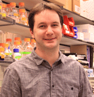 | Andreas Hochwagen, PhD Principal Investigator Assistant Professor of Biology andi@nyu.edu |
| |
PostDocs | |
| 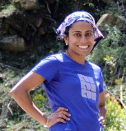 | Viji Subramanian, PhD Postdoc vvs2@nyu.edu Research interests: Investigating the role of the synaptonemal complex in the regulation of the double-strand break repair outcome. |
| |
| 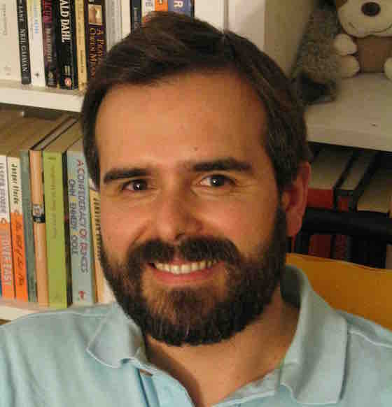 | Luis A. Vale Silva, PhD Postdoc luis.valesilva@nyu.edu Research interests: Investigating the effect of chromosome size on meiotic double-strand break formation. |
| |
Graduate Students | |
| 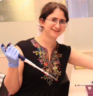 | Tovah Markowitz PhD student tem298@nyu.edu Research interests: Understanding how condensin and cohesin control meiotic chromosome structure and recombination. |
| |
| 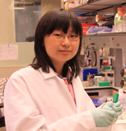 | Danni Wang PhD student dw1258@nyu.edu Research interests: Analyzing position effects of the repetitive rDNA array. |
| |
 |
Andres Mansisidor PhD student am4992@nyu.edu Research interests: Investigating the structural and functional dynamics of repetitive DNA and the physiological consequences of such dynamics. |
| |
Matthew Robert Paul PhD student mrp420@nyu.edu Research interests: The role of the 3D organization of chromatin on meiotic double-strand break formation. |
|
| |
| 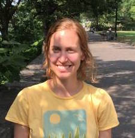 | Jonna Heldrich PhD student jh4321@nyu.edu Research interests: Understanding the role of genome topology in the formation of meiotic double strand breaks. |
| |
| 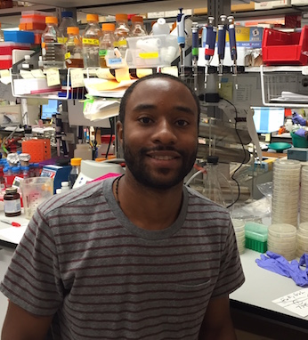 | Temistocles Molinar Jr. PhD student tm2484@nyu.edu Research interests: Causes and consequences of ribosomal DNA array instability. |
| |
Neem Patel Master's student & Technician njp301@nyu.edu Research interests: Characterizing features underlying meiotic DSB end resection tracks. |
|
| |
Trevor Stoltzfus Master's student tjsir63@gmail.com Research interests: Analysis of meiotic chromosome structure protein Hop1. |
|
| |
Undergraduate students | |
| 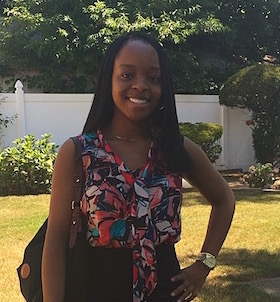 | Vivian Utti Undergraduate student vu246@nyu.edu |
| |
Michelle Shi Undergraduate student mss723@nyu.edu |
|
| |
Former lab members | |
| 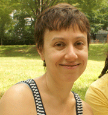 | Hannah Blitzblau, PhD Postdoc Moved on to become Senior Research Scientist at Novogy |
| |
| 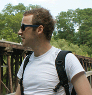 | Gerben Vader, PhD Postdoc Moved on to become Junior Group Leader at Max Planck Institute of Molecular Physiology (Lab website) |
| |
Neil Humphryes, PhD Postdoc Moved on to become Senior Bioinformatician at Desktop Genetics, Ltd |
|
| |
| 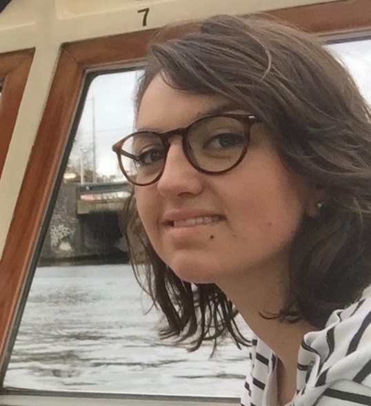 | Marie Jezequel Visiting Master's student |
| |
| 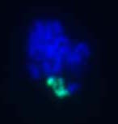 | Jawaher Al-Zahrani Research volunteer Moved on to become PhD student at Cornell University |
| |
| 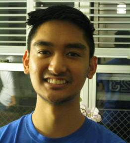 | Daniel Suarez Undergraduate student Moved on to Postbaccalaureate program at SUNY Purchase College |
| |
Ashima Goel Undergraduate student |
|
| |
| 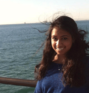 | Priyanka Srivastava Undergraduate student |
| |
Anna Maria Houshangi Master's student & Technician Moved on to become NYC Teaching Fellow at Department of Education |
|
| |
| 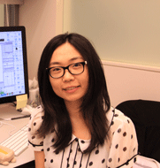 | Sunny (Xiaoji) Sun Master's student Moved on to become PhD Student at NYU School of Medicine |
| |
| 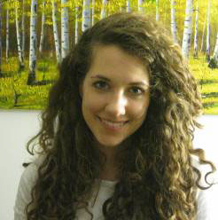 | Meaghan Michelle Colletti Master's student Moved on to become Student at UT Southwestern Medical Center |
| |
| 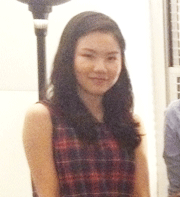 | Daeun Hur Undergraduate student Moved on to become Student at NYU College of Dentistry |
| |
| 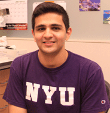 | Raj A. Desai Undergraduate student Moved on to become Student at Columbia University College of Dental Medicine |
| |
| 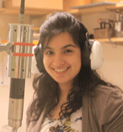 | Alisha Karim Undergraduate student |
| |
Raghav Mishra Undergraduate student |
|
| |
Namitha L Gubbi Undergraduate student |
|
| |
| 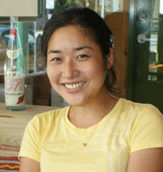 | Mihoko Tame Lab Manager & Technician Moved on to become PhD student at NKI-AVL |
| |
| 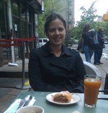 | Jill Falk Lab Manager & Technician Moved on to become PhD student at MIT |
| |
| 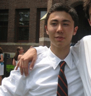 | Andrew Markhard Lab Manager & Technician Moved on to become Technician at Mootha Lab in Broad Institute of MIT & Harvard |
Links
Current collaborators
Laboratory of Amy MacQueen, Wesleyan University: Synaptonemal complex dynamics
Laboratory of Jennifer Fung, University of California, San Francisco: Genome-wide studies of recombination
Laboratory of Gerry Fink, Whitehead Institute: Epigenetic control and cell surface variation in fungi
Laboratory of Eva Hoffmann, University of Sussex, UK: Control of meiotic recombination and chromosome segregation
Laboratory of Nancy Hollingsworth, State University of New York, Stony Brook: DNA repair template choice in meiosis
Contact us
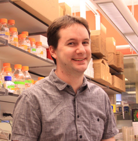
Andreas Hochwagen, PhD Principal Investigator Assistant Professor of Biology andi@nyu.edu Lab: 1-(212)-992-6556
Lab mailing address
Hochwagen Lab New York University Department of Biology 1009 Silver Center 100 Washington Square East New York, NY 10003-6688
Lab shipping address
Hochwagen Lab New York University Department of Biology 150 Brown 100 Washington Square East New York, NY 10003